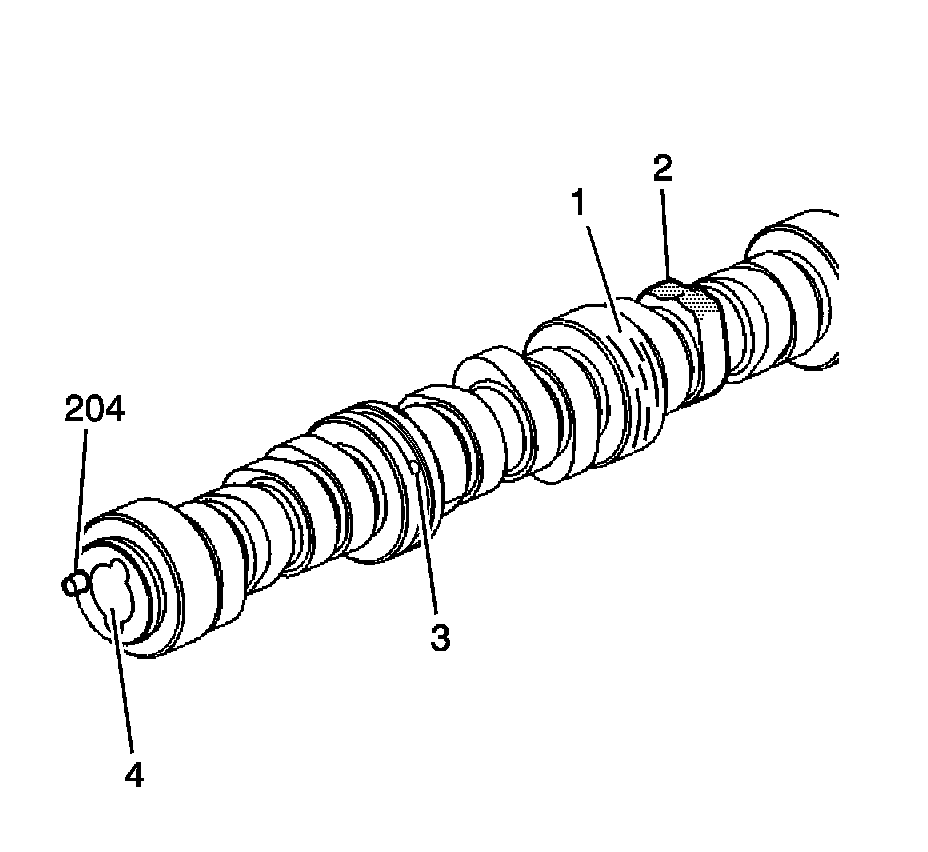
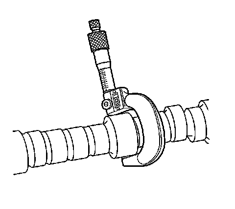
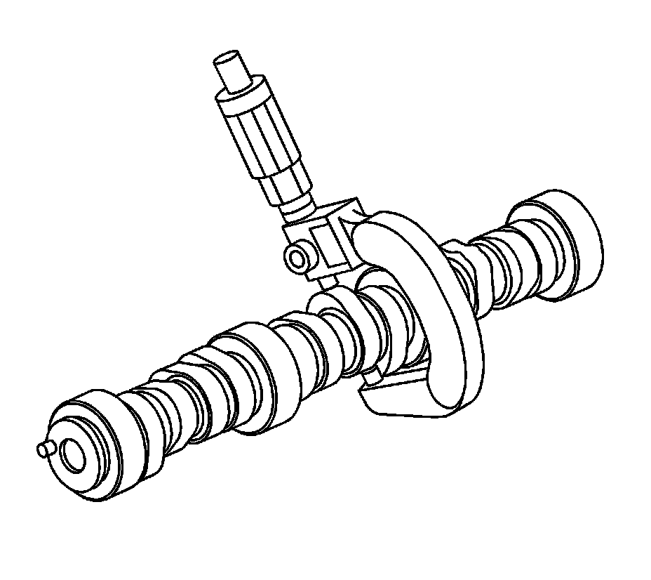
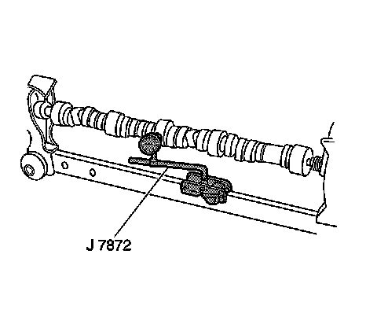
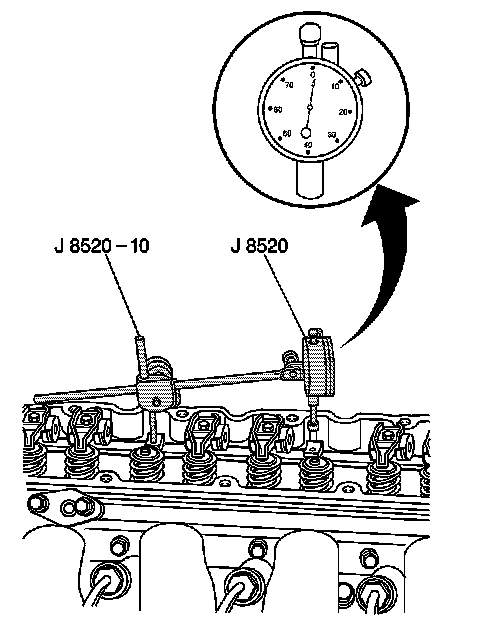

41. Camshaft and Bearings Cleaning and Inspection
Camshaft and Bearings Cleaning and Inspection (RPO LY6/L76/L92)
Tools Required
^ J 7872 Magnetic Base Dial Indicator Set
^ J 8520 Camshaft Lobe Lift Indicator

1. Clean the components in solvent.
Caution: Refer to Safety Glasses and Compressed Air Caution.
2. Dry the components with compressed air.
3. Inspect the camshaft bearing journals (1) for scoring or excessive wear.
4. Inspect the camshaft valve lifter lobes (2) for scoring or excessive wear.
5. Inspect the camshaft position (CMP) actuator oil passages (3) for restrictions.
6. Inspect the threaded bolt hole (4) in the front of the camshaft for damaged threads or debris.
7. Inspect the camshaft sprocket pin (204) for damage.
8. Inspect the camshaft retainer plate for wear or a damaged sealing gasket.
If the camshaft retainer plate sealing gasket is not cut or damaged, it may be used again.

9. Inspect the camshaft bearings for proper fit in the engine block. Camshaft bearings have an interference fit to the engine block and should not be loose in the engine block bearing bores.
10. Inspect the camshaft bearings for excessive wear or scoring.
Bearings with excessive scoring or wear must be replaced.

11. Using a micrometer, measure the camshaft journals for wear and out-of-round.
^ If the camshaft bearing journals are greater than 0.025 mm (0.001 in) out-of-round, replace the camshaft.
^ If the camshaft bearing journal diameter is less than 54.99 mm (2.164 in), replace the camshaft.

12. Using a micrometer, measure the camshaft lobes for wear. Refer to Engine Mechanical Specifications.

13. Measure the camshaft runout.
1. Mount the camshaft in wooden V-blocks or between centers on a fixture.
2. Using the J 7872, measure the runout of the intermediate camshaft bearing journals.
3. If camshaft runout exceeds 0.05 mm (0.002 in), the camshaft is bent and should be replaced.
Measuring Camshaft Lobe Lift

Important: Measuring camshaft lobe lift is a procedure used to determine if the camshaft lobes have worn. This test is to be performed prior to engine disassembly and with the camshaft and valve train components installed in the engine.
1. Using the J 8520, measure camshaft lobe lift.
2. Remove the valve rocker arms and bolts.
3. Install the dial indicator mounting stud into the valve rocker arm bolt hole.
4. Assemble the components of the J 8520 and position onto the stud.
5. Position the shaft of the dial indicator onto the end of the pushrod.
6. Rotate the face of the dial indicator to zero.
7. Slowly rotate the crankshaft clockwise, until the dial indicator obtains its highest and lowest readings.
8. Compare the total to specifications.